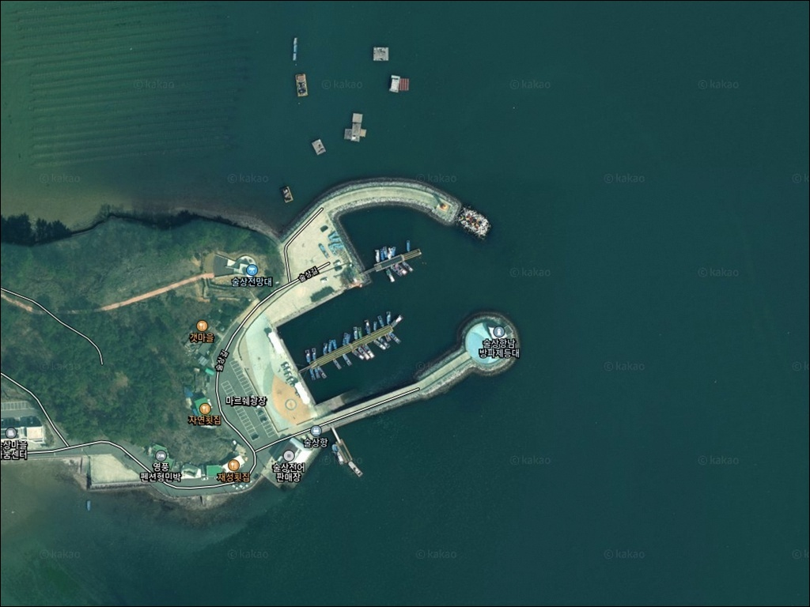
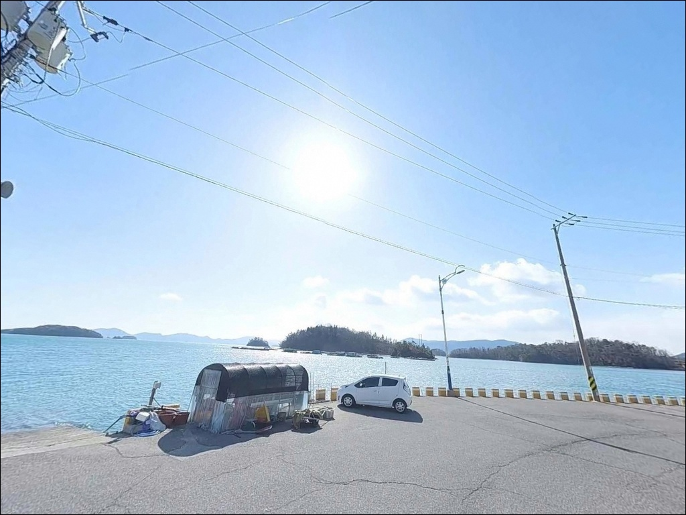
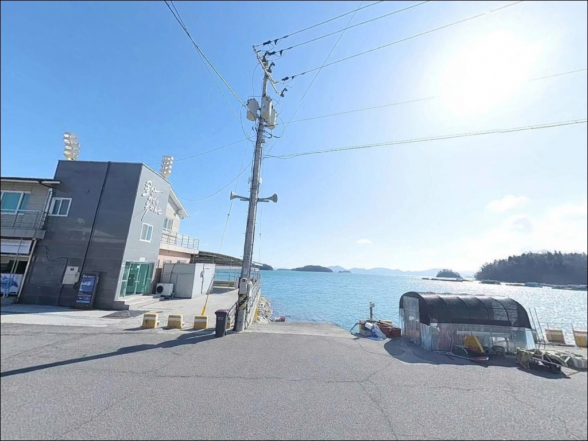
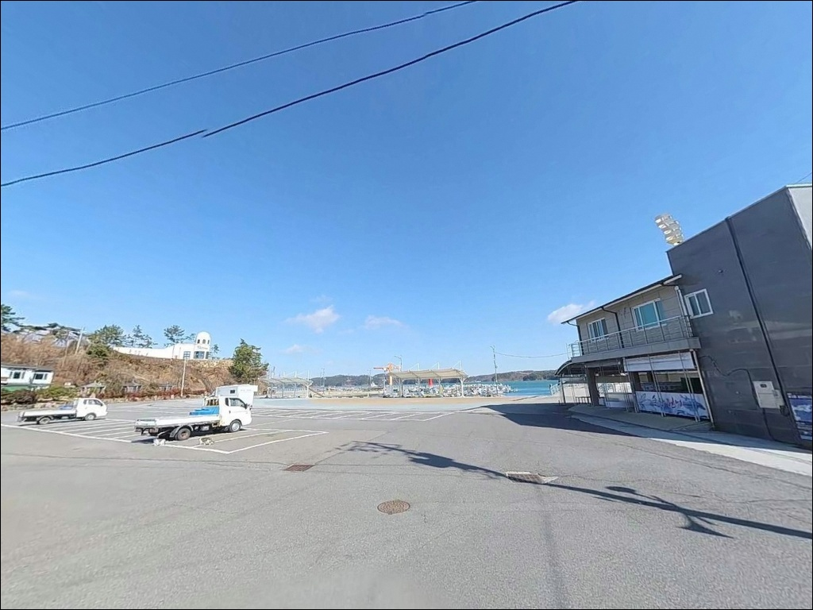
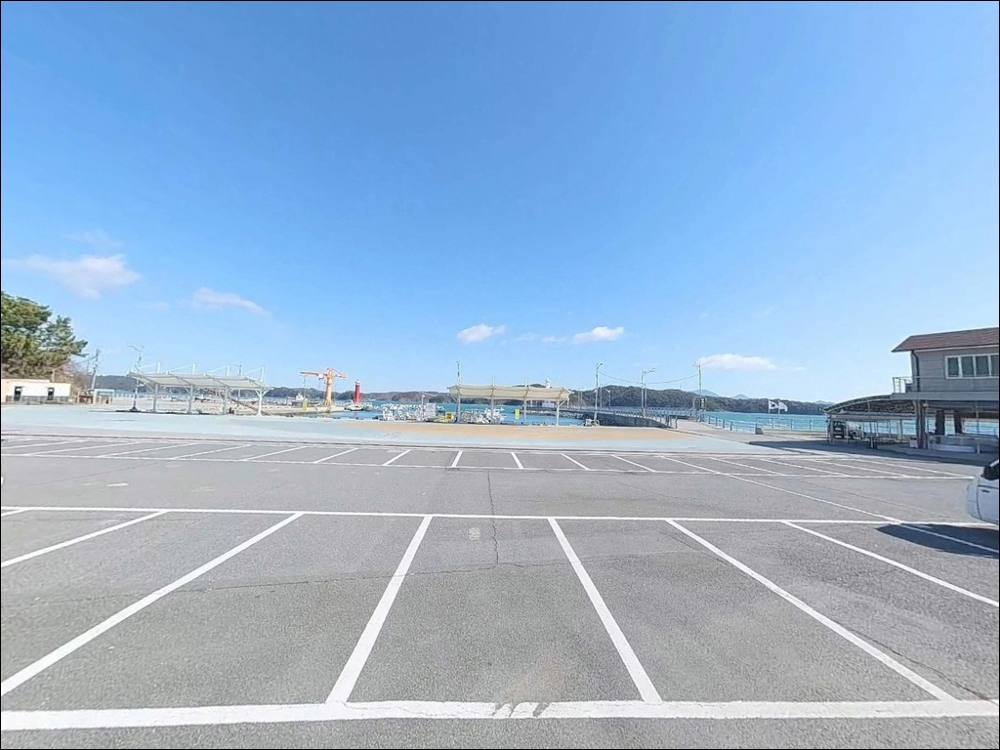
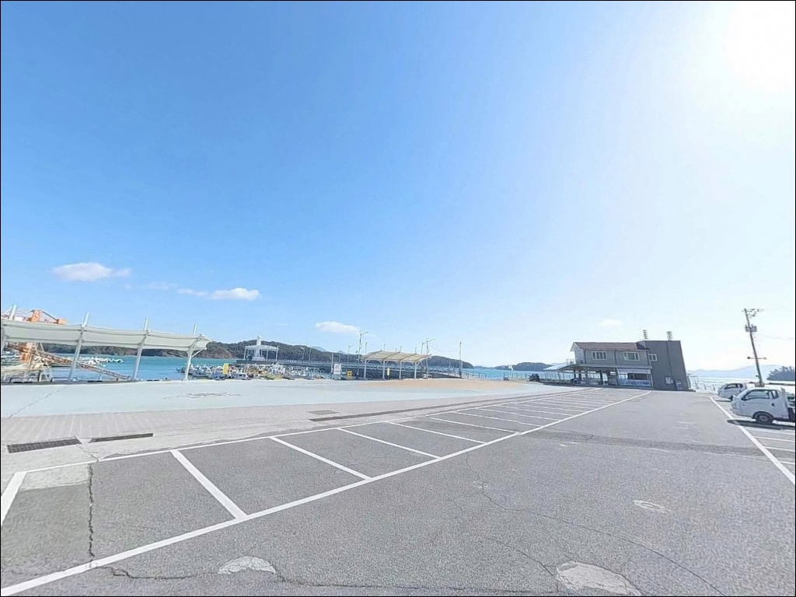
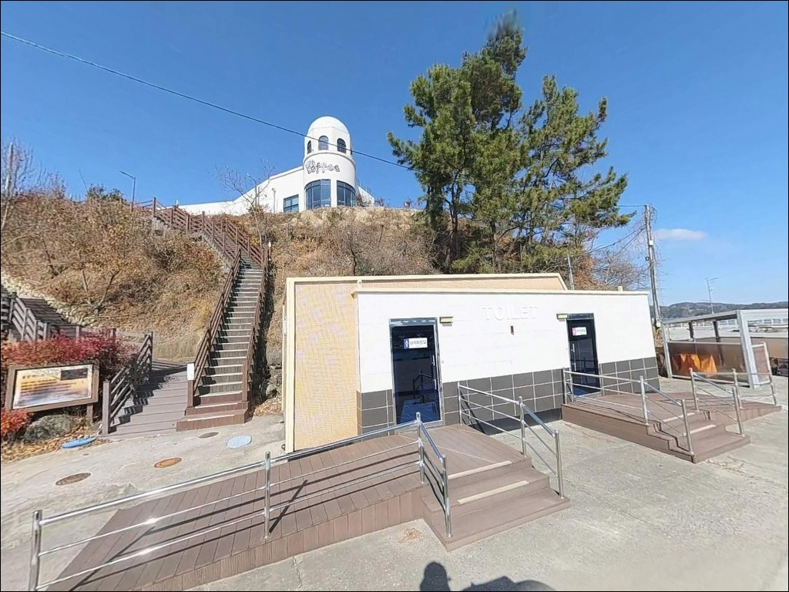
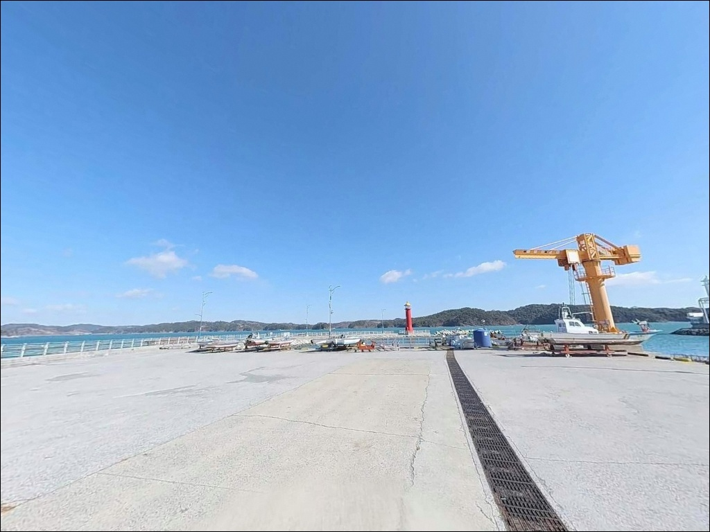
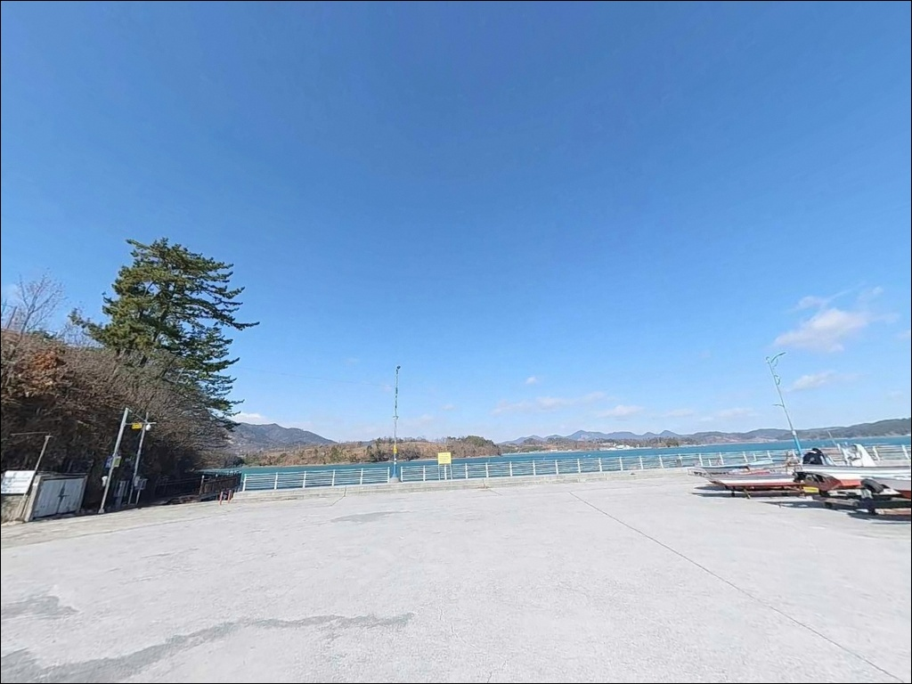

사리 때 조류에 채비 털리던 하동 술상항, 만조 전후 살아난 원투 입질
이 페이지에는 광고(제휴 링크 포함)가 있으며, 광고 링크를 통해 구매하면 운영자가 판매 수익 또는 수수료를 받을 수 있습니다. 포인트 사진: 카카오맵 스카이뷰·로드뷰. 이 페이지의 지도·사진 이미지는 카카오맵의 실제 서비스 이미지와 다를 수 있습니다.


포인트 안내
술상항
경남 하동군 진교면 술상리 738-1
물때를 확인하지 않고 사리 전후에
방파제 끝단으로 올라서면
조류가 너무 강해 채비가 흘러버리고
낚시 자리 자체가 위험해집니다.
남강과 남해가 만나는 기수역 특성상
조수 간만의 차가 크고 조류가 강한 해역으로,
입장 타이밍이 조과를 좌우합니다.
술상항은 2005년 지방어항으로 지정된 뒤
어촌뉴딜 사업을 통해 전망대, 광장, 둘레길이 조성된
다기능 관광어항입니다.
가을 전어 시즌에는 전어 판매장이 열리고
방문객이 집중되는 활기찬 항구이지만,
낚시 포인트로서의 핵심은
방파제 끝단 외항과 조류 타이밍에 있습니다.
이 글은 술상항의 진입 동선,
차박 체류 여건, 물때 기준,
낚시 스타일별 지형 적합성에 집중합니다.
조황 단정이나 특정 어종 보장은
이 글의 범위에 포함되지 않습니다.

1. 진입 동선과 포인트 접근성
술상항은 남해고속도로 진교 나들목에서
가까운 거리에 위치합니다.
진교면 소재지를 통과해 술상길을 따라가면
항까지 포장도로로 이어지며,
왕복 2차선 수준의 도로가 항구 앞까지 연결됩니다.
승용차와 SUV 기반 차박 차량은
진입에 별 어려움이 없는 구조입니다.
대형 캠핑카나 카라반 차량이라면
마을 진입 구간의 도로 폭이
좁아지는 지점이 있으므로
위성지도로 사전 확인 후 진입하는 편이 좋습니다.
항 내부는 물양장 부지와 방파제 진입부 주변에
주차 가능한 공터가 형성되어 있으며,
어선 하역 동선을 피한 자리를 먼저 확인해야 합니다.
회차 공간은 어항 내부와 방파제 입구 부근에
소형 공간이 마련되어 있습니다.
전어 성수기(8~10월)에는 어촌계 조업 차량과
방문객이 동시에 몰리므로
이 시기 방문이라면 오전 일찍 자리를 잡는 편이
주차와 낚시 동선 모두에 유리합니다.

2. 차박 환경과 야간 체류 여건
술상항은 관광어항으로 조성된 만큼
어촌뉴딜 사업을 통해 전망대와 광장, 둘레길이 정비되어 있습니다.
가로등과 경관조명이 갖춰져 있어
야간 시야 확보는 무난한 편이며,
방파제 등대가 야간 위치 식별을 돕습니다.
다만 관광형 어항 특성상
전어 시즌이나 주말에는 유동 인구가 있고
완전히 조용한 차박 환경을 기대하기는 어렵습니다.
술상마을, 양달마을, 음달마을이
항 주변에 분포하고 있어
야간 프라이버시는 외딴 포인트에 비해 제한적입니다.
이 일대는 한려해상국립공원 청정해역에 포함되는 구역입니다.
국립공원 구역 내에서는 지정 장소 외
야영·취사가 원칙적으로 허용되지 않으므로
출발 전 구역 경계 포함 여부를
고흥지방해양수산청 또는 국립공원공단에 사전 확인하는 것이
안전한 체류를 위한 첫 번째 조건입니다.


3. 주변 편의시설 및 인프라 현황
술상항에서 약 3~4km 북동쪽에
진교면 소재지(진교리)가 위치합니다.
편의점, 마트, 주유소, 식당이
면 중심가에 집중되어 있어
출발 전 보급이나 급작스러운 소품 조달이 필요할 때
이 동선을 활용하는 편이 현실적입니다.
항구 내에는 전어 판매시설이 운영됩니다.
성수기에는 현지에서 전어를 구입할 수 있는 환경이지만,
낚시 소품과 채비는 항구 현장에서 조달하기 어렵습니다.
출발 전에 여분 채비, 봉돌, 식수, 얼음을
미리 갖추고 진입하는 편이 안전합니다.
응급 상황 발생 시
하동읍 방향의 의료 시설까지
이동 거리가 상당합니다.
비상약품과 기본 구급 용품은
출발 전 반드시 차량에 적재하는 것이
기본 준비 원칙입니다.

4. 진입 전 반드시 챙겨야 할 준비사항
술상항 방문 전 가장 먼저 확인할 것은 물때입니다.
남강과 남해가 만나는 기수역 특성상
조수 간만의 차가 크고 조류 흐름이 강합니다.
바다타임에서 진교면 기준 물때를 확인하고,
조금 전후 또는 만조 전후를 노려
출발 시각을 맞추는 것이 기본 전략입니다.
사리 전후 방파제 끝단은 조류가 너무 강해
채비 컨트롤이 어려운 구간이 됩니다.
기상청 예보를 당일 아침 다시 한번 확인하는 것이 좋습니다.
북서풍이 강한 겨울철에는
방파제 외항 방향이 직접 노출되는 구조여서
방풍 대비가 필요합니다.
파고 1.5m 이상이면 외항 방파제 접근을 자제하는 것이
해양경찰청 안전수칙의 기본 기준입니다.
방파제 끝단은 테트라포드 구간이 포함되어 있습니다.
야간에는 헤드랜턴과 구명조끼를 반드시 착용하고,
표면 미끄럼 여부를 낮에 먼저 확인한 뒤
야간 출조 여부를 결정하는 편이 좋습니다.
전어 시즌에는 어촌계 위판 차량 통행이 잦으므로
조업 구역 진입을 삼가는 것이 기본 매너입니다.

5. 지형 기반 낚시 여건 분석
술상항의 핵심은 남방파제 끝단과 조류의 조합입니다.
남방파제는 길이 약 300m 규모로
남해 방향으로 뻗은 구조이며,
끝단 쪽으로 갈수록 수심이 급격히 깊어지는 편입니다.
내항 수심 3~5m에 비해
방파제 끝단 외항 방향은 7m 이상 구간이
형성되는 수심 변화 포인트입니다.
남강 하류와 남해가 만나는 기수역 특성상
먹이가 풍부한 환경이 갖춰져 있습니다.
조류가 강하게 흐르는 외항 방향은
회유성 어종이 지나는 길목 역할을 하며,
방파제 중간부에는 테트라포드 주변으로
어종의 은신처가 자연스럽게 형성됩니다.
내항은 잔잔한 수역으로 가족 단위 생활낚시에 어울리는 구조입니다.
간조 시에도 수심이 유지되는 편이라
입문용 찌낚시나 장대낚시에도 활용됩니다.
다만 물양장 구간은 어선 접안 공간이므로
낚시 가능 여부를 현장 안내문으로 먼저 확인해야 합니다.
최신 조황은 출조 전에 꼭 검색해 보시기 바랍니다.


6. 포인트에 어울리는 낚시 스타일
이 포인트에서 첫 번째로 어울리는 낚시 방식은 원투낚시입니다.
방파제 외항 방향으로 채비를 멀리 보내면
수심이 깊어지는 구간에서
바닥 어종을 노리기에 적합한 조건이 갖춰집니다.
기수역 특성상 농어, 숭어, 붕장어를
바닥 탐색 위주로 기대해 볼 수 있는 구조입니다.
찌낚시는 방파제 끝단과 내항 석축 구간에서
모두 운용이 가능합니다.
특히 가을철 학공치 시즌에는
내항에서 유동채비로 공략하는 방식이 어울리고,
감성돔을 노린다면 외항 방향의 조류를 타는
릴찌낚시 채비가 이 지형에 유효합니다.
에깅과 루어낚시도 이 포인트와 맞는 스타일입니다.
가을 갑오징어·주꾸미 에깅은
방파제 끝단 집중 공략이 기본입니다.
야간에는 가로등 아래 밝은 수면 경계를 따라
볼락 라이트게임도 운용이 가능합니다.
농어 루어낚시는 조류가 살아나는
만조 전후 야간 타이밍이 활성도가 높아지는 편입니다.

7. 진교면 낚시 포인트가 안 맞을 때 플랜 B
술상항 조류가 너무 강하거나
성수기에 자리가 여의치 않을 때는
노량항이 첫 번째 대안입니다.
술상항에서 약 5~7km 거리이며,
노량 해협의 강한 조류를 직접 활용하는 구조로
루어낚시와 에깅에서 이 권역 내
가장 조류 흐름이 강한 포인트 중 하나입니다.
진교면 권역에서 조금 더 조용한 환경을 원한다면
중평항을 대안으로 삼을 수 있습니다.
술상항에서 약 8km 거리로,
어촌뉴딜 사업 항구로 정비된 곳이어서
접근성과 기본 시설 면에서 안정적입니다.
같은 하동 연안 해역 조건을 공유합니다.
반경 10km권으로 넓히면
대도항도 선택지입니다.
접근성이 좋고 방파제 구조가 갖춰진 항으로,
원투낚시 중심의 운용에 적합한 편입니다.
술상항을 처음 방문할 때는
노량항을 기점으로 삼고
술상항을 병행 탐색하는 동선이 효율적입니다.

기수역 조류와 물때를 알면
술상항이 달라 보입니다
원투낚시, 에깅, 루어낚시를 다양하게
즐기고 싶은 낚시인이라면
술상항의 방파제 구조와 기수역 수질은
여러 방식을 시도하기에 적합한 환경입니다.
조류가 살아 있는 물때를 맞추면
방파제 끝단에서 어종 접촉 기회가
뚜렷하게 달라지는 포인트이기도 합니다.
반면 물때 계산 없이 사리 전후에 외항에 서거나,
전어 시즌에 어선 동선을 막는 위치에 주차하면
현장에서 불편한 상황을 맞닥뜨리기 쉽습니다.
물때 확인, 주차 동선 파악, 여분 채비 준비,
이 세 가지를 갖추고 가면
하동 남해안에서 기억에 남는 출조가 될 수 있습니다.
가을 전어 시즌 낚시를 겸하고 싶거나,
진교IC 인근에서 간편하게 차박 거점을 잡고 싶다면
국립공원 구역 체류 조건만 사전에 확인해두면
낚시와 차박을 함께 즐기기에 나쁘지 않은 선택입니다.